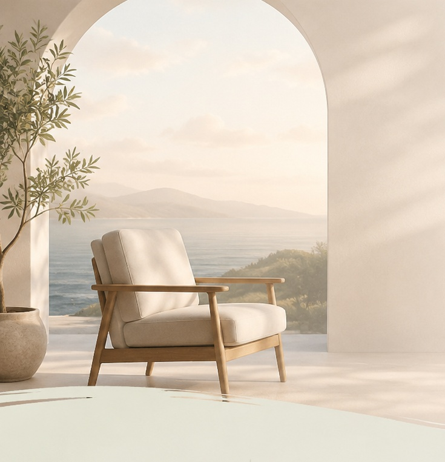

המרחב בנפש
לגלות את הכוחות שבך.
NLP לצמיחה אישית, שינוי והגשמה
הגשמה
לחיות את החיים שאתה רוצה
תודעה
להבין את עצמך לעומק
צמיחה
כלים פרקטיים לשינוי אמיתי
תוצאות אמיתיות
שינוי פנימי שמוביל לתוצאות חיצוניות
כלים מעשיים
כלים פרקטיים לחיי היום-יום
ליווי אישי
תהליך מותאם בדיוק לך
מרחב בטוח
מקום להקשבה, קבלה וצמיחה
הפיל והנמלה:
הדינמיקה של שינוי
הנמלה היא המודע שלך — הרצון, ההיגיון, המחשבות שאתה שולט בהן. הפיל הוא התת-מודע — שם מאוחסנים כל הרגשות, הזיכרונות והדפוסים האוטומטיים.
כשהנמלה מנסה ללכת לכיוון אחד אבל הפיל מושך לשני — הפיל תמיד ינצח. זה כל ההבדל. ב-NLP אנחנו לומדים לדבר עם הפיל, ומשם משנים הכל.
"התשובה נמצאת במקום שבו הפסקנו לחפש."
מזהים את הבעיה האמיתית
לא מטפלים בסימפטום — חושפים את השורש הרגשי שבאמת עוצר אותך.
עובדים עם התת-מודע
כלים עמוקים של NLP שיוצרים חיווט מחדש — במקום שבו שינוי אמיתי קורה.
חיים שמשתנים
הרגלים חדשים שעובדים אוטומטית — חופש פעולה אמיתי בכל תחומי החיים.
המסע המשותף שלנו
פגישת היכרות · חינם
שיחה קצרה שבה נבין מה האתגר שלך, מה אתה רוצה לשנות, והאם הגישה מתאימה לך. בלי התחייבות.
תהליך NLP אישי
סדרת מפגשים אישיים 1:1 שבהם צוללים אל המבנה הפנימי שלך ויוצרים את השינוי מהשורש.
מעקב והטמעה
ליווי מתמשך עד שהשינוי מרגיש טבעי לחלוטין — והופך לחלק מהזהות החדשה שלך.
שאלות שאולי עולות לך
מה זה בעצם NLP, בפשטות?
add
NLP הוא שפה שמדברת ישירות עם התת-מודע — המקום שממנו נובעים ההרגלים, התגובות והפחדים שלנו. במקום להילחם בעצמך בכוח הרצון, לומדים לשנות את הדפוס מהשורש, שם שינוי אמיתי באמת קורה.
כמה מפגשים צריך?
add
זה תלוי בך ובמה שאתה רוצה לשנות. יש דברים שזזים כבר בפגישה אחת, ויש תהליכים עמוקים יותר. בפגישת ההיכרות החינמית נבין יחד מה מתאים לך — בלי התחייבות מראש.
זה מתאים לי?
add
אם יש משהו שחוזר על עצמו בחיים שלך — הרגל שלא מצליח להשתנות, תגובה אוטומטית, תחושה שמשהו עוצר אותך ואתה לא בטוח מה — כנראה שכן. הדרך הכי טובה לדעת היא פשוט לדבר.
איך מתחילים?
add
שולחים לי הודעה ב-WhatsApp, קובעים שיחת היכרות קצרה — חינם וללא התחייבות. משם נמשיך רק אם זה מרגיש נכון לשנינו.
מוכן לפתוח מרחב חדש?
פגישת היכרות ראשונה — חינם, ללא התחייבות. רק שיחה אמיתית.
chat דברו איתי ב-WhatsApp